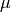

02 - Multiplexing¶
- Space Division Multiplexing
- Reuse of channel in different places, an example being terrestrial TV
- Frequency Division Multiplexing
- Use of different frequencies within a channel, again terrestrial TV being an example
- Time Devision Multiplexing
- Coming next
- Code Division Multiplexing
- Coming later
Multiplexing (STM)¶
The telephone network is referred to as synchronous transfer mode or STM.
The destination of data on the network depends on where it comes from, and when it appears.
There are some problems with STM:
- Idle users still consume bandwidth
- Links are shared with a fixed cyclical schedule, which means bandwidth cannot be adjusted.
The hardware to do this is very very simple, and thus high speed.
Multiplexing (PTM)¶
The internet uses packet transfer mode or PTM.
The destination of data on the network is defined as a label in the header (front) of the packet.
A label may be global (which is connectionless, IP uses this) or context sensitive (virtual circuit or connection oriented, e.g. MPLS)
Packets may be of arbitrary size.
The hardware to do this can be complicated due to the label lookup process
Multiplexing (ATM)¶
Asynchronous transfer mode or ATM is like PTM in that the destination of data is determined by labels in the header of the packet. However all packets are the same size.
In ATM labels are smaller and only references a relative table rather than a globally absolute IP address.
Things get a lot more complicated when packets are of variable size, since ATM was designed for speed the decision was made to expect that all packets are the same size. The constant size makes the hardware trivial to build.
Statistical Multiplexing¶
The benefits of PTM and ATM:
Consider an application which uses 1Mbps 10% of the time (idle the other 90%) on a 10Mbps link. How many of these applications can you support using STM as apposed to PTM/ATM?
With STM you can have 10 of said application, as you must allocate 1Mbps of bandwidth to each instance separately.
With PTM/ATM you can have 10 to 100 instances of the application running depending on luck and how much delay and loss you can tolerate.
Randomness¶
Assuming that no packets are buffered in the network (meaning if the network is saturated with packets we cannot store them to send later) and that any packet loss in intolerable:
- If all applications talk at one N = 10.
- If magically just 10 of the 100 talk at the same time N = 100.
Hence we might ask what is the probability that more than 10 talk at once, in order to determine what the probability of packet loss is.
To do this means understanding the stochastic process or random transmission of the packets from the application. This has been a research topic for the last 30 years and as new applications appear, new behaviours are found.
This Is An Old Problem¶
In 1909 telephone companies where dealing with the problem of how many phone lines does a small village need to the outside world to ensure that the probability of a call blocking is less than 5%.
And Also a Modern One¶
Digital TV uses MPEG coding which naturally leads to a variable data rate.
A Simple Stochastic Process¶
Poisson Process: If the expected number of occurrences in an interval is λ, then the probability that there are exactly k occurrences (k being a non0negative integer) is equal to:
It is though that the poisson process can be used to describe other events in reality such as hurricanes, outbreaks of war, horse kick fatalities in the Prussian Cavalry etc.
A Simple Queue¶
 = Arrival rate of packets
= Arrival rate of packets-  = Departure rate of packets
 = Traffic Intensity
= Traffic Intensity
If , that means that more packets are arriving that can be sent out again. Therefor the queue would grow in size.
If , we can determine the probability of packets in the queue, where is a non-negative integer:
We can also calculate the average queue length:
Unfortunately real network traffic doesn’t correspond to Poisson.
CDMA (Code Division Multiple Access)¶
Since all users share the same frequency space, a unique code is assigned to each user (say 1024 bits).
There are three types of code division:
- Frequency hopping (Frequency Division Multiple Access - FDMA)
- Time hopping (Time Division Multiple Access - TDMA)
- Direct Sequence
It allows multiple users to coexist and transmit simultaneously with minimal interference if:
- codes are orthogonal
- A large code can be selected at random and will be orthogonal to any other random code.
The signal being sent is XORed with the random code and the result is transmitted on the wire. You cannot uncover the signal unless you know the code. It is even difficult to interfere with communications if you do not know the code.
The XOR is effectively flipping the bits of the random code whenever there is a 1 in the signal to be sent. Thus the result is the random code with different section flipped.
Frequency Hopping¶
Divide bandwidth into say 8 frequencies. Every (say) 4 bits or so you switch to a different bandwidth segment decided by the unique 1024 bit code.
Designed for radio controlled torpedoes to prevent radio jamming. It worked by defining a code which would determine the frequency to use. The receiving device would also have this same code allowing it to listen only to correct frequency.
Time Hopping¶
Randomly transmitting at different times say for a particular millisecond and then weighting for a random time (of course all determined by the unique code.)
Direct Sequence¶
The Code Division part of CDMA is supported by a technology called Direct Sequence Spread Spectrum or DSSS. It uses the full bandwidth of a devices transmitting frequency (hence spread spectrum).
Each transmitted bit of data (i.e. a 1 or a 0) gets a different chip. A chip is multiple bits long (e.g. 7 bits long) and the sequence in which chips are used in known by the receiver.
The data bit either flips the values of chip (in the case of a 1) or leaves it alone (in the case of a 0). When the receiver gets the data, if the chip is flipped that means a data bit of value 1, otherwise if the data matches the expected chip its a data bit of 0.
CDMA is the basis for 3G mobile telephony and GNSS/GPS. GPS uses a code of exactly 1000 bits. Since there is only 1 radio receiver which communicates with the satellites it has to compare the data received with every chip for each satellite in order to reveal the signal.
Low Power Signals¶
This all works because when you use a very low powered signal, it is hard to detect that the signal was a signal at all. Only if you were specifically looking for the signal on that bandwidth or at that time.